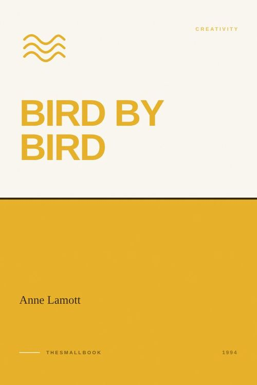

Library › Authors › Anne Lamott
Books by Anne Lamott
Anne Lamott has one book in the library. Every book here is read down to the big idea, the lessons, the lines worth keeping and the actions worth taking. Start with the summary, then buy the full book if it earns a place on your shelf.

Bird by Bird
1994 · 8 min · 6 lessons
Write shitty first drafts, take it bird by bird, and remember: perfectionism is the enemy of the people.
Anne Lamott's Bird by Bird is a writing book that is secretly a life book. Her wisdom: every writer starts with 'shitty first drafts' - the good stuff comes only after you let the bad stuff pour out. Take your work 'bird by bird' - one small step at a time, because the whole picture is paralyzing. And underneath it all: write to find out what you think, not to be impressive. The book's tone is the lesson: honest, funny, and completely without pretension.
Lessons in the summary
- Shitty First Drafts
- Bird by Bird: Small Steps Beat the Big Picture
- Perfectionism Is the Voice of the Oppressor
- Write to Find Out What You Think
- Take Care of Yourself, Take Care of the Work
- Jealousy Is a Map of What You Secretly Want
Lines worth keeping
- Almost all good writing begins with terrible first efforts.
- Perfectionism is the voice of the oppressor.
- Thirty years ago my older brother, who was ten years old at the time, was trying to get a report on birds written... he was immobilized by the hugeness of the task ahead. Then my father sat down beside him and said, 'Bird by bird, buddy. Just take it bird by bird.'
Questions Anne Lamott helps answer
Read nearby authors next
- Adam Grant 4 books
- Chip Heath & Dan Heath 4 books
- Seth Godin 4 books
- Austin Kleon 3 books
- Steven Pressfield 3 books
- Daniel Coyle 2 books
- David Bayles & Ted Orland 1 book
- Don Norman 1 book